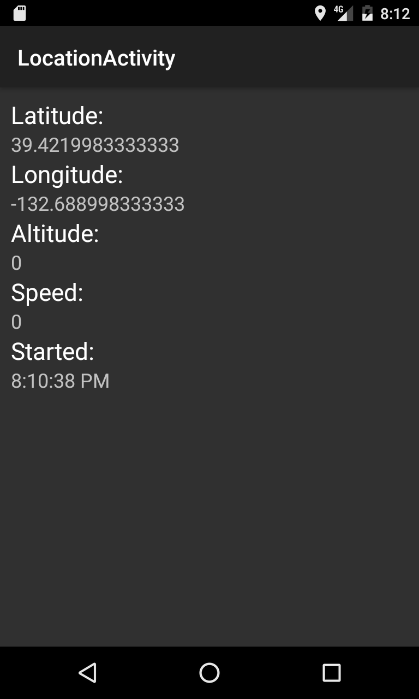

Duration
25 minutes
Goals
The primary goal of this lab is to bind to an existing service allowing us to subscribe to an event defined on the service and visualize data in an Activity.
Required assets
The provided Exercise 4 folder contains a subfolder named Start that you'll use for this exercise. It also contains a folder named Completed with a solution you can use to check your work.
Please make sure you have these folders before you begin.
You'll also need a device capable of receiving location data or an emulator able to simulate location data.
Note some Android emulators require you to change the simulated position before they will report the location. Keep this in mind when testing.
Challenge
- Open the start solution and examine the provided code, specifically look at LocationService.cs.
- Create a
Binderderived class for the service. - Return a binder instance from the LocationService's
OnBindmethod. - Create a service connection that exposes a connection changed event and the service as a property.
- Instantiate the service connection in
LocationActivityand bind the service. - Use the existing UI to visualize the current location data provided by the service.
Steps
Explore the start solution
- Open the start solution in the Exercise 4 folder.
- Inspect LocationService.cs. This service will track the device location when started.
- Open LocationActivity.cs and its XML layout UI definition Location.axml. This activity will be used to visualize the device position provided by the service.
- Open MainActivity.cs. This activity has a single button that launches LocationActivity.
- Optionally run the application and inspect the UI. (You won't see any location information at this point.)
Create a Binder
Before we can bind a service, we need a Binder derived class to deliver the service to the service connection.
- Create a new class named LocationServiceBinder.
- Inherit from
Binder. - Add a public property named Service of type
LocationServiceand make the setter private. - Add a constructor that accepts a
LocationServiceand assigns it to theServiceproperty.
Implement OnBind
- Open LocationService.cs and find the
OnBindmethod. - Delete the existing code and return a new instance of
LocationServiceBinderpassingthisinto the constructor.
public override IBinder OnBind(Intent intent)
{
return new LocationServiceBinder(this);
}
Create a service connection
The a service connection instance will receive the binder when the service is bound. It will also be used to notify subscribers when the service is bound and unbound.
- Create a new class named LocationServiceConnection.
- Derive from
Java.Lang.Object. This will simplify the implementation ofIServiceConnectionwhich inherits fromIJavaObjectandIDisposable; both are implemented byJava.Lang.Object. - Implement
IServiceConnectiononLocationServiceConnection. This requires two methods:OnServiceConnectedandOnServiceDisconnected. - Create a public
eventEventHandler<bool>named ServiceConnectionChanged. - Call
ServiceConnectionChangedfrom both service connection methods, passingtrueinOnServiceConnectedandin OnServiceDisconnected.
Expose the service from the service connection
- Add a public
LocationServiceproperty named Service with a public getter and private setter. - In
OnServiceConnectioncast the passed inIBinderto the concreteLocationServiceBinder. - Access the service using the
LocationServiceBinder'sServiceproperty and assign it to the class levelServiceproperty you just defined. - In
OnServiceDisconnected, setServicetonull.
Bind the service
- Open LocationActivity.cs.
- Create a
LocationServiceConnectionfield named lsConnection. - In
OnCreate, instantiatelsConnection. - In
OnResume, create anIntentto startLocationService. - Call
BindService, passing in the intent,lsConnection, and set the flags parameter toBind.AutoCreate. - In
OnPause, callOnUnbindServicepassing inlsConnection.
Monitor connection changes
With the service bound, we can monitor connection changes by subscribing to the ServiceConnectionChanged event we created on the service connection.
- In
OnCreate, subscribe to theServiceConnectionChangedevent onlsConnectionwith a method named ServiceConnectionChanged. - In the event handler method, create an
if/elsestatement for theisConnectedargument. - When
isConnectedis true, subscribe to theLocationChangedevent onlsConnection.Serviceusing a named method named LocationChanged (which we will create later). - When
isConnectedis false, unsubscribe toLocationChanged. - We can also visualize the service's start time when we connect. When
isConnectedis true, display the service'sStartTimeproperty using the startTextTextView.
Visualize location data
Our final step is to visual the location data provided by the service. LocationActivity already has TextView controls defined.
The LocationChanged method receives a parameter of type LocationChangedEventArgs named e by default.
e has a property of type Location which contains the location data.
- Assign
e.Locationto a local variable named location. - Use the properties on
locationto assign theTextproperties on each of:latText(latitude)longText(longitude)altText(altitude)speedText(speed)
- Start the application and navigate to the location screen.
Summary
In this exercise, you created a binder amd service connection to bind to a service. You then visualized data provided by the service.